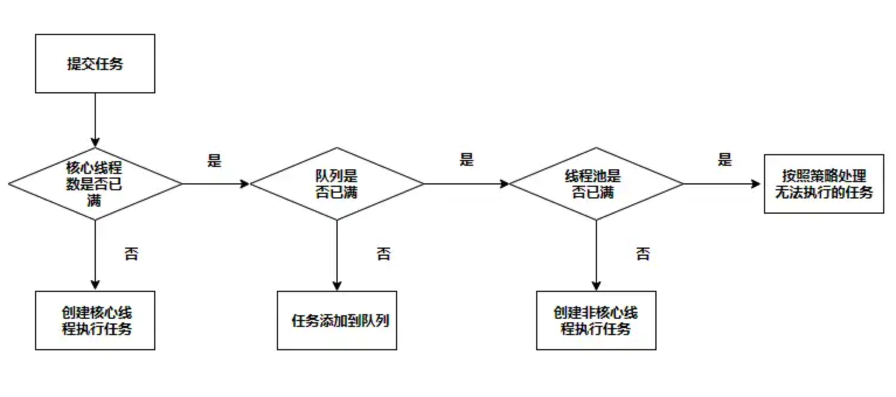

理解线程池
jdk在5之后加入了concurrent包，提供了很多并发环境下实用的类，其中包括线程池ExecutorService。利用池化技术可以节省资源，提高性能，但是使用的不得当也会导致OOM，此篇说明线程池的核心参数和使用时的注意事项。
线程池核心参数
在使用线程池的过程中，很多人会使用Executors的静态方法去更便捷的创建一些线程池，主要有以下几种：
- newSingleThreadExecutor()
- newFixedThreadPool(int nThreads)
- newCachedThreadPool()
- newScheduledThreadPool(int corePoolSize)
阿里曾在他的开发手册中禁止开发人员使用Executors去创建线程池，而要使用ThreadPoolExecutor，为的应该是让开发人员多了解线程池的核心参数，避免使用不当。ThreadPoolExecutor也就是上面几个方法最后会调用的基础方法，其中的参数较多，如下所示：
1 | public ThreadPoolExecutor(int corePoolSize, |
- corePoolSize 核心线程数，表示线程池中一般工作时保持的线程数量。注意线程池在创建的时候并不会启动核心线程，而是等到有任务提交时才去创建线程，除非主动调用prestartCoreThread或者prestartAllCoreThreads，所以在任务不充足的情况下线程池的大小也不一定是corePoolSize。
- maximumPoolSize 线程池内的最大线程数量，表示线程池中允许存在的最大线程数量，包含核心线程和非核心线程。
- keepAliveTime 多余闲置线程存活时间，“多余”指的是超过核心线程数量的非核心线程，当它们执行完任务后，超过存活时间就会被销毁。
- unit 存活时间单位
- workQueue 任务队列，暂存还没有被执行的任务，只会保存通过execute方法提交的任务。
- threadFactory 线程工厂，创建线程时用的线程工厂，默认是Executors.defaultThreadFactory()。
- handler 任务拒绝策略，当任务队列满了并且线程池内线程数达到最大时，对新加任务的处理策略。默认是AbortPolicy，即丢弃新加的任务并抛出异常RejectedExecutionException。
线程池的整个工作流程如下入所示

使用Executors的利弊
好处当然是使用更加便捷，Executors不需要去管那么多的核心参数，能立马上手创建线程池用于任务执行。但是Executors里的一些静态方法创建的线程池，其线程池和任务队列的大小是没有限制的，有OOM的风险。
newSingleThreadExecutor()
1 | public static ExecutorService newSingleThreadExecutor() { |
new LinkedBlockingQueue()的队列长度为Integer.MAX_VALUE(0x7fffffff)，基本是个无界队列，所以可以往队列中无限地添加任务，有可能发生OOM。
newFixedThreadPool(int nThreads)
1 | public static ExecutorService newFixedThreadPool(int nThreads) { |
newFixedThreadPool与SingleThreadExecutor类似，区别就是核心线程数不同，使用的也是LinkedBlockingQueue，在资源有限的时候容易引起OOM异常。
newCachedThreadPool()
1 | public static ExecutorService newCachedThreadPool() { |
核心线程数为0，最大线程数为Integer.MAX_VALUE，可以看作无限创建线程。而SynchronousQueue是一个不存储元素的队列，所以newCachedThreadPool每次将会创建非核心线程去执行任务。无限创建线程是一个很危险的动作，资源不足时会发生OOM。